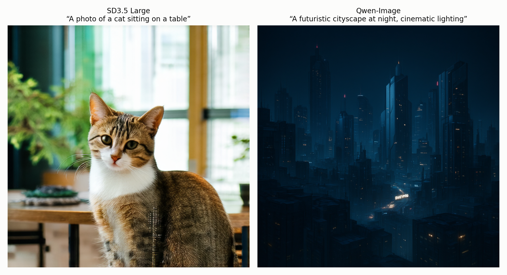
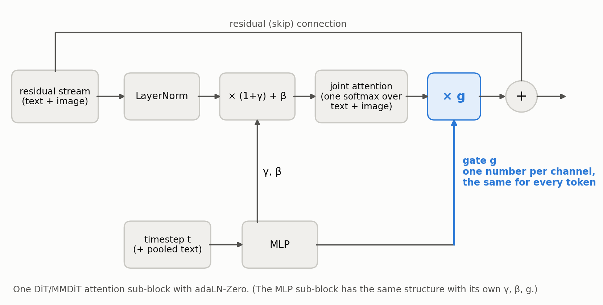
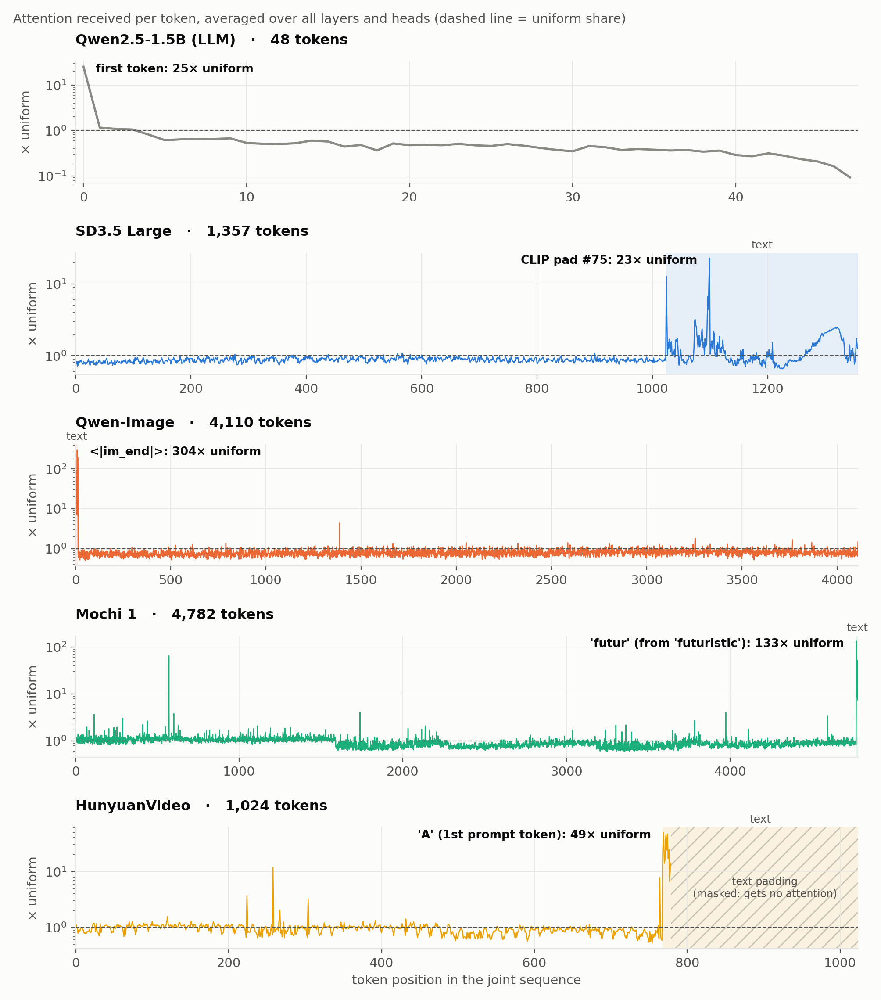
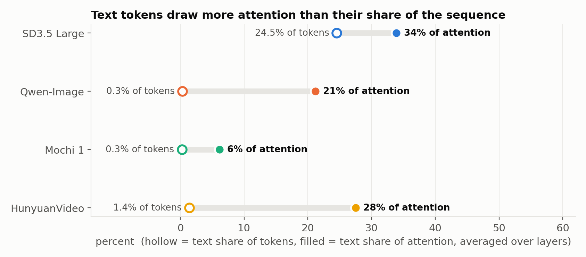
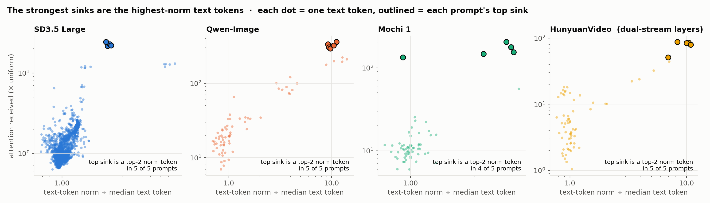
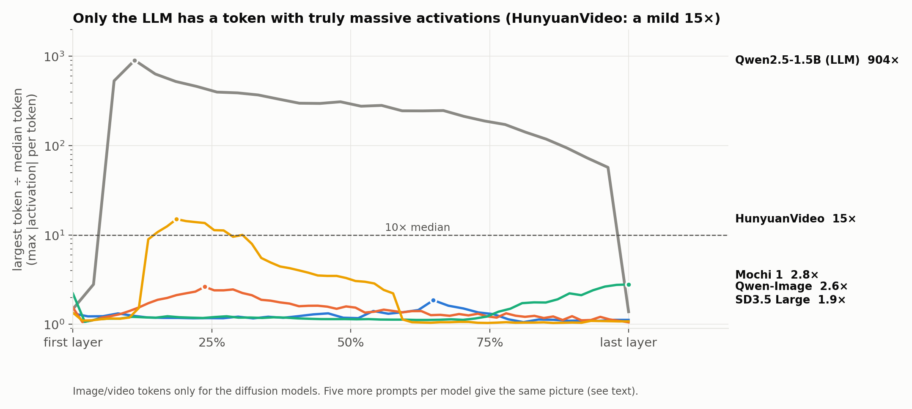
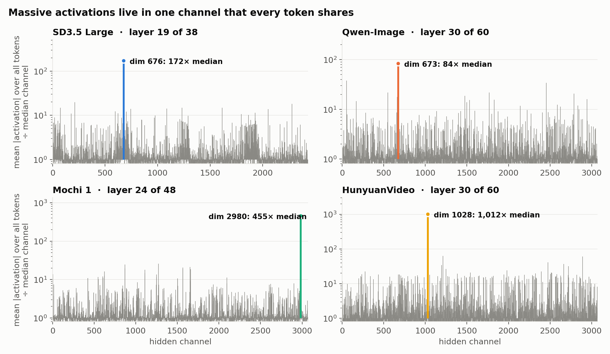
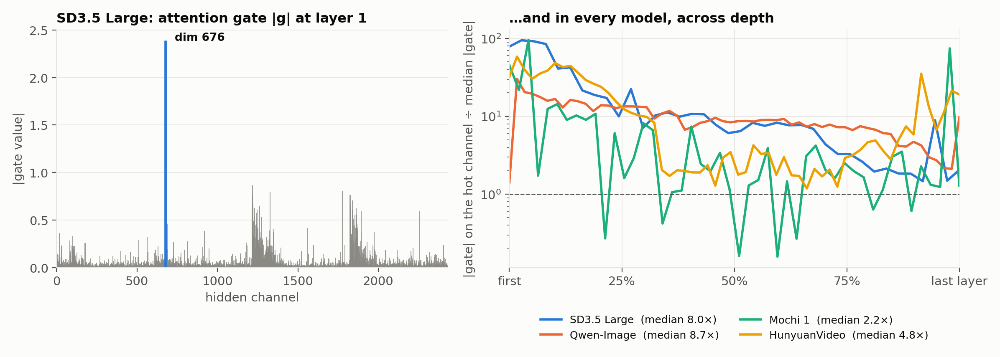
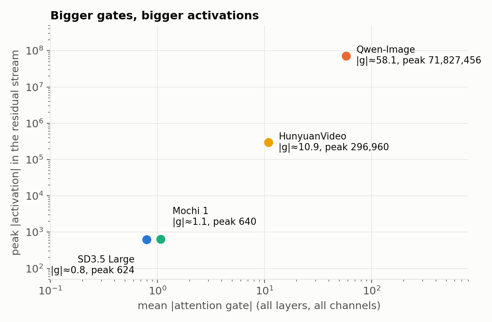
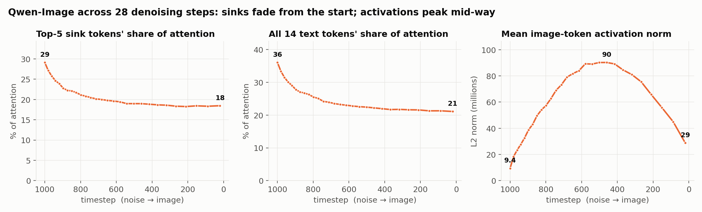

Where Did the Sink Go? Attention Sinks and Massive Activations in Text-to-Image and Video Diffusion Transformers
Scope. Four models, five prompts each, one seed, analyzed at the final denoising step (plus a 28-step denoising sweep for Qwen-Image). Everything here is observational: we haven't intervened on the models yet (see §10).
TL;DR. In LLMs, a single token (usually the first) plays two roles: it's the attention sink that soaks up most of the attention, and it carries massive activations, values hundreds of times larger than typical. We looked inside four text-to-image and text-to-video diffusion transformers (SD3.5 Large, Qwen-Image, Mochi 1, HunyuanVideo) and asked where that token went. The short answer: into the text.
- The sinks move into the text. In every model and on every prompt, a text token is the most-attended token in nearly every layer. In the two image models it's a fixed structural token: Qwen-Image's chat-template
<|im_end|>(about 300× its uniform share of attention, versus 25× for the LLM's first token), or an SD3.5 CLIP padding slot. - The sink's large norm moves with it. The strongest sinks are the highest-norm tokens in the text stream. That's the LLM's sink-plus-outlier pairing, relocated. It matches the idea that text tokens act as "registers."
- Image tokens never develop LLM-scale outliers. The largest image token is within 3.4× of the median in three models. In HunyuanVideo, two or three patches per prompt reach 12–15×. The LLM's first token reaches 904×.
- The image stream gets a different kind of massive activation: one hidden channel that every token shares. In SD3.5 it's channel 676, the same one Gan et al. (2025) found. The adaLN attention gate is itself an outlier on that channel, in all four models.
- Over denoising (Qwen-Image), sinks fade while the massive activation peaks mid-way. The two phenomena run on different clocks.
All of this is stable across five different prompts per model.

1. Why look for sinks in diffusion transformers?
Attention sinks are tokens that receive a disproportionate share of attention from nearly every query, regardless of content. In LLMs this is usually the first token. The prevailing explanation: softmax attention has to put its probability mass somewhere, and a head that wants to do "nothing" parks it on a token whose value vector contributes little.
Massive activations are a few activation values that are orders of magnitude larger than the rest of the hidden state. In LLMs they sit on the same first token, in a handful of channels. They appear abruptly in an early layer, stay roughly constant, and are neutralized near the end: a rise–plateau–fall shape. The two are linked: the huge activations help make that token's key align with every query.
Diffusion transformers differ from LLMs in three ways that should matter for both:
- No causal mask. In a causal LLM, every query can see token 0, which gives it a structural head start. Diffusion transformers use bidirectional attention, so no position is privileged.
- Text and image share one sequence. Multimodal diffusion transformers (MMDiTs, like SD3) run joint attention over text tokens and image/video patch tokens in a single softmax. Many also keep text and image in separate streams with their own weights, joined only inside attention.
- Adaptive LayerNorm (adaLN). Instead of fixed LayerNorm weights, each block computes its shift, scale, and output gate from the timestep (and sometimes a pooled text embedding). The gate multiplies the attention output per channel before it's added back to the residual stream.

What prior work found
- Gan et al. (NeurIPS 2025) found that DiT image tokens have channel-wise massive activations: one or two channels are large on every token (SD3.5 channel 676; FLUX channels 154 and 1446). They also found the residual-branch gate spikes on the same channel.
- Gan et al. (ICLR 2026) reported that these activations grow steadily as denoising proceeds, don't depend on the prompt, and matter for fine detail.
- Cheng et al. (2026) reported the same channel-wise pattern in video DiTs, stronger on first-frame and temporal-boundary tokens.
- Starodubcev et al. (2026) showed that class-conditional DiTs have no token-wise outliers unless trained with register tokens. In text-to-image models, text tokens become high-norm outliers, as if acting as registers.
Nobody, as far as we know, has put attention sinks and massive activations side by side across image and video MMDiTs, in both the image and the text stream. That's what we do here.
2. Setup
| Model | Type | Layers | Tokens in joint attention |
|---|---|---|---|
| SD3.5 Large | image, MMDiT | 38 | 1,024 image + 333 text (77 CLIP + 256 T5) |
| Qwen-Image | image, MMDiT | 60 | 4,096 image + 12–17 text |
| Mochi 1 | video, asymmetric DiT | 48 | 4,770 video + 11–16 text |
| HunyuanVideo | video, dual → single stream | 60 (20 + 40) | 768 video + 10–18 real text tokens (256 slots, padding masked) |
| Qwen2.5-1.5B | LLM baseline (causal) | 28 | 48 |
Every diffusion model ran the same five prompts:
- "A photo of a cat sitting on a table"
- "A futuristic cityscape at night, cinematic lighting"
- "A microscopic view of a cell splitting"
- "An old man playing chess in a park, autumn leaves falling"
- "A red sports car driving along a coastal road at sunset"
For every layer we record, at the final denoising step:
- the full attention matrix (all heads)
- value-vector norms
- the residual-stream hidden state entering the block, for both the image/video tokens and the text tokens
- the adaLN attention gate
- the attention output norm before and after gating
Everything is seed 42, bf16.
Metrics.
- Attention received by token k is its column mean, αₖ = (1/N) Σₜ Aₜₖ: how much attention an average query gives it. Uniform attention gives 1/N. We report α in multiples of uniform so models with different sequence lengths are comparable.
- Token-wise outlier ratio = the largest token's max |activation| ÷ the median token's.
- Channel-wise outlier ratio = a channel's mean |activation| over all tokens ÷ the median channel's.
- Text-token norm = the L2 norm of a text token's hidden state ÷ the median text token's, at the same layer.
3. Sinks exist in every model, and they live in the text

Every diffusion model has a handful of tokens that draw far more than their share of attention, and the strongest ones are text tokens. A text token is the single most-attended token in almost every layer: 33–37 of 38 layers in SD3.5, 59 of 60 in Qwen-Image, 42–47 of 48 in Mochi, and 60 of 60 in HunyuanVideo, across all five prompts. Image and video patches mostly sit near the uniform line. Mochi has one video patch that stands out (about 65× uniform), a reminder that image-side sinks aren't impossible, just rare.
Text tokens draw far more attention than their numbers would predict. HunyuanVideo's 11 real text tokens are 1.4% of the tokens it attends over, yet receive 28% of all attention. Qwen-Image's 14 are 0.3% of the sequence and receive 21%.

Which tokens are they? We decoded the sink positions with each pipeline's own tokenizer and prompt template:
| Model | Top sink | What it is |
|---|---|---|
| Qwen-Image | <|im_end|> on all 5 prompts; next come assistant, \n, <|im_start|> |
Chat-template tokens that the pipeline appends after every prompt |
| SD3.5 Large | CLIP padding slot 75 on all 5 prompts; next, CLIP <|startoftext|> and padding slots 72–74 |
The start token and padding at the end of the 77-token CLIP window. SD3 doesn't mask padding, so these are real sinks. |
| HunyuanVideo | a prompt token that changes with the prompt ("photo", the first word, a piece of "autumn") | Content tokens, with the <|end_header_id|> delimiter close behind |
| Mochi 1 | a prompt token that changes with the prompt (futur, at, in, a word piece) |
Content tokens, with </s> a frequent per-layer sink |
So the image models sink onto fixed structural positions, the same kind of "no-content" slots LLMs use (BOS, delimiters, padding). Content words like "cat" or "cityscape" never become the sink there. The two video models are different: their top sink is a real prompt token, and which one depends on the prompt. §4 explains what those tokens have in common.
A note on thresholds. The LLM sink metric of Sun et al. (2026) counts a head as sinking if some token receives > 0.3 of the average query's attention. That fires for 82% of the LLM's heads but only 0.4–6% of the diffusion models'. That's not because the diffusion sinks are weak. With 1,000–4,800 tokens instead of 48, "30% of all attention" is a much higher bar. Relative to uniform, the diffusion sinks are as strong or stronger: the top sink averages 294–359× uniform in Qwen-Image, 134–205× in Mochi, 49–66× in HunyuanVideo, and 22–24× in SD3.5, versus 25× for the LLM's first token.
4. The outlier moved too: the strongest sinks are the highest-norm text tokens
In an LLM, the sink token is also the massive-activation token. We'll see in §5 that no image token plays that role in these models. So we recorded the text tokens' hidden states too, and asked whether the sink tokens stand out there.
They do:

- SD3.5. CLIP
<|startoftext|>is the highest-norm text token on all five prompts, at 24–33× the typical text token, and it's the #2 sink. The #1 sink, CLIP padding slot 75, is the next-highest-norm token by this measure. - Qwen-Image.
<|im_end|>is 9–11× the typical text token, the second-highest norm on every prompt. The highest isassistantor<|im_end|>itself, also a top sink. - HunyuanVideo, dual-stream layers (0–19), where text has its own stream. On every prompt, the top sink is the #1 highest-norm text token (#2 once), and the two strongest sinks are exactly the two highest-norm tokens on 4 of 5 prompts. That's why its sink changes with the prompt: it follows whichever token the text encoder made largest.
- Mochi shows the same rule, weaker. Its text stream has no big outliers (the largest token is only 2.5–3.9× the median). Still, the top sink is the highest-norm text token on 4 of 5 prompts.
The one wrinkle is HunyuanVideo's single-stream layers (20–59), where text and video share weights. Norm and attention still correlate strongly across the text tokens (rank correlation +0.53 to +0.79). But a few tokens grow into huge outliers, 140–170× the typical video token, and those aren't the single top sink.
So the LLM's pairing, where one token is both the sink and the outlier, survives. It just lives in the text stream. This is what Starodubcev et al.'s "text as registers" picture predicts: text tokens, which carry no image content of their own, serve as the place to park attention and to store large, content-free signals.
5. Image tokens don't get LLM-scale outliers

The LLM shows the textbook shape: at layer 2, its first token jumps to hundreds of times the median, stays there, and collapses at the final layer. Among image and video tokens, nothing comes close:
- In SD3.5, Qwen-Image, and Mochi, the most extreme token is within 3.4× of the median in every layer, on every prompt.
- HunyuanVideo is the one partial exception. On every prompt, two or three video patches reach 12–15× the median, only in its dual-stream layers (within layers 9–18).
- Which patches it is changes with the prompt, and they have no consistent position.
- The whole excess is on the same shared hot channel described next.
- The strongest of them is also a mild sink (10–14× uniform on every prompt): the same pairing as §4, in miniature.
6. The image stream's massive activation: one channel that every token shares
If the image stream's massive activations aren't in any one token, where are they? In a single hidden channel, large on essentially every token:

| Model | Dominant channel | Top channel in how many layers | Tokens that are large on it |
|---|---|---|---|
| SD3.5 Large | 676 | 38 / 38 | ~100% |
| Qwen-Image | 673 | 59 / 60 | ~95% |
| Mochi 1 | 2980 | 47 / 48 | ~100% |
| HunyuanVideo | 1028 | 58 / 60 | ~100% |
The channel is the same on all five prompts in every model.
SD3.5's channel is 676, exactly the one Gan et al. report. It's a clean independent replication, and the same pattern holds in the other three models, including both video models. The scale differs wildly: SD3.5's channel peaks in the hundreds, HunyuanVideo's at 200,000–300,000, and Qwen-Image's residual stream is enormous everywhere (the median token norm at the middle layer is about 25 million).
7. The gate writes into that channel
Gan et al. noticed that SD3.5's residual gate spikes on channel 676. We checked whether that generalizes, and it does. In every model, the attention gate is itself an outlier on the massive-activation channel:

| Model | Gate on hot channel ÷ median gate (median over layers) | Layers where it's the gate's single largest channel |
|---|---|---|
| Qwen-Image | 8.7× | 55 / 60 |
| SD3.5 Large | 7.8–8.1× | 25 / 38 |
| HunyuanVideo | 4.8× | 28 / 60 |
| Mochi 1 | 2.2× | 14 / 48 |
The effect is strongest in the first couple of layers (up to about 95× in SD3.5 at layer 1), which is plausibly where the channel gets seeded. Because the gate is computed from the timestep, not the image, these ratios barely move across prompts.
The gates also set the overall scale. Across models, the average gate magnitude spans two orders of magnitude, and the peak activation spans five:

In the two models with large activations, the gate amplifies rather than suppresses. Averaged over layers, the gated attention output is about 8× the ungated output in HunyuanVideo and about 106× in Qwen-Image. In SD3.5 it's roughly neutral (1.2×), and Mochi's gate actually shrinks it (0.5×). Two cautions:
- This is four models, so it's a correlation, not a law.
- HunyuanVideo's gate jumps from about 4 to about 20 at layer 20. That's exactly where the architecture switches from dual-stream to single-stream blocks, so it's partly an architectural effect.
Why a channel for images but a token for text? Here's our working hypothesis. The adaLN gate is a per-channel vector computed from the timestep and shared by every token ([batch, channels]). If the network needs a large, content-independent signal in the image stream, the cheapest way to build one with this machinery is to open one gate channel wide, writing the same large value into every patch. For a place to park attention, though, it needs a token that every query can find, and text tokens are the natural candidates: they carry no pixels to corrupt. An LLM has neither per-channel gates nor a separate stream, so it does both jobs with its first token. We haven't tested this causally yet (§10).
8. Across denoising, sinks and massive activations run on different clocks
Diffusion models run the same network many times, from pure noise to a clean image. We tracked Qwen-Image across all 28 denoising steps:

- The same tokens are the sinks at every step.
<|im_end|>is the #1 sink at 27 of 28 steps, and it and two other template tokens have among the lowest value norms at every step. - Sinks are strongest at the noisiest step and fade. The top-5 sink tokens take about 29% of all attention at t=1000 and about 18% at the end. The drop happens in 58 of 60 layers.
- Attention to text overall falls from 36% to 21%. The noisier the input, the more the image tokens lean on the text.
- The image stream's massive activation follows a different curve. It grows about 10× from t=1000 to a peak around t≈460, then falls about 3× by the end. At no step does a single image token stand out (the largest token is always within 3.3× of the mean).
The rise-then-fall of the activation differs from Gan et al.'s steady rise toward t=0. With one model and one prompt we don't read much into that yet; it's the first thing to check on SD3.5, the model we share with them.
9. Smaller observations
- Not every sink is a "drain." In LLMs, sink tokens usually have tiny value vectors, so dumping attention on them does nothing. That holds for Qwen-Image's template sinks (value norm about 3× below the median). It holds partly for HunyuanVideo (its top two sinks are below the median value norm, its third above). It does not clearly hold for SD3.5 or Mochi, whose top sinks have ordinary value norms. Some diffusion sinks may route information rather than discard it.
- Revisiting a Mochi sink paper. A prior study (arXiv 2504.10317) reported that Mochi's sinks appear only in its last four layers. On Mochi's conditional pass we found sink heads throughout: 453 in layers 0–43 vs 65 in layers 44–47. The last two layers do have mostly sink heads (88% and 71%). The paper's first-frame bias partly replicates: frame 0 has 27 sink tokens, frame 1 has 3, frame 2 has 11.
10. Limitations and what's next
Limitations.
- One seed per prompt; the final denoising step only, except for the Qwen-Image sweep.
- Five prompts per model: enough to show the patterns are stable, not enough to estimate how they vary.
- Everything is observational. We haven't intervened on anything yet.
Next experiments, in priority order.
- Interventions to test whether any of this is causal:
- Zero or clamp the image stream's hot channel.
- Set the gate on the hot channel to the median.
- Block attention to the sink text tokens, or replace them with a fixed register.
- Measure what happens to the images and videos.
- A denoising sweep on SD3.5, with text-token hidden states, to compare with Gan et al. and check whether the §4 pairing holds at every timestep.
- More seeds per prompt, to put error bars on the numbers.
Appendix: methods
- Capture. For each model we recompute the attention matrix explicitly (softmax of QKᵀ/√d) for the conditional pass. We hook each block's input for the residual stream (image and text streams separately) and its adaLN module for the gate.
- HunyuanVideo's forward pass runs through the stock diffusers attention processor, including its text-padding mask. We apply the same mask when recomputing attention.
- SD3.5 used classifier-free guidance at 4.5; Qwen-Image ran without it (no negative prompt).
- Sink identity. Positions are mapped to tokens by re-running each pipeline's prompt template and tokenizer:
- Qwen-Image drops the first 34 template tokens.
- HunyuanVideo crops the first 95.
- SD3.5 concatenates 77 CLIP positions with 256 T5 positions.
- Statistics. Every number and figure is computed from compact per-layer statistics (attention received per token, value norms, per-token and per-channel activation magnitudes, gate vectors) extracted from the full captures.
References
- Sun et al. 2026. The Spike, the Sparse and the Sink.
- Gan et al. 2025. Unleashing Diffusion Transformers for Visual Correspondence by Modulating Massive Activations. NeurIPS.
- Gan et al. 2026. Massive Activations are the Key to Local Detail Synthesis in Diffusion Transformers. ICLR.
- Cheng et al. 2026. Steering Video Diffusion Transformers with Massive Activations.
- Starodubcev et al. 2026. Registers Matter for Pixel-Space Diffusion Transformers.
- arXiv 2504.10317 (attention sinks in Mochi).